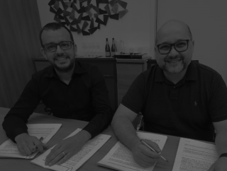
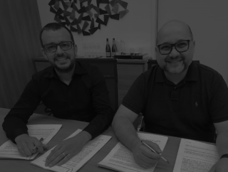

A2C VIRA BRIVIADEZ E FORMA UMA DAS MEIORES OPERAÇÕES DE COMUNICAÇÃO DO PAÍS
Maior agência full catarinense e uma das top 10 independentes do país, a A2C agora faz parte de um projeto ainda maior e mais ambicioso. Com 18 anos de trajetória, a empresa nascida em Joinville e com forte presença nacional foi adquirida pela BriviaDez. Resultado dessa ação de M&A, surge a mais completa operação de estratégia, experiência e comunicação do Brasil. Cerca de 250 colaboradores atuarão em seis sedes, sendo uma delas no exterior.
De acordo com Anderson de Andrade, sócio-fundador e CEO da A2C, a novidade fortalece o estado nos mercados de comunicação e transformação digital.
— Esse é o maior e mais relevante fato já realizado no setor em Santa Catarina. São duas empresas nativas da nova economia e da era da transformação completa dos modelos de negócios — aponta o executivo, que fará parte do Conselho de Administração da BriviaDez.
FOCO EM SANTA CATARINA
Segundo as duas empresas que unificaram as operações, a percepção da relevância do mercado catarinense foi uma das principais motivações da aquisição. Líder estadual, a A2C tem entre seus clientes algumas das principais marcas locais, como Senior, Ciser, Embraco, Univille, Ailos e Neogrid – com o reforço do portfólio nacional, que reúne Paris Filmes e Tecnisa, entre outras companhias. Já a BriviaDez mantém um carteira com 30 clientes de grande porte, como Vivo, Banco Carrefour, Votorantim Cimentos e KPMG. Em Santa Catarina, atua há mais de duas décadas, desenvolvendo soluções para organizações como Floripa Airport e Angeloni.
— Estamos alinhados com o propósito do estado mais inovador do país. Santa Catarina é campeã na abertura e no desenvolvimento de empresas de tecnologia, comunicação e inovação. Aqui se formam muitos talentos, que aumentam substancialmente a competitividade catarinense. Por isso tudo, queremos reforçar nossa participação — destaca Anderson de Andrade, que já presidiu Associação Brasileira dos Agentes Digitais (ABRADi) e é investidor serial em scale-ups.
CULTURA NÔMADE
As seis sedes são como hubs para a relação com os clientes e parceiros. Todos os procedimentos de gestão de capital humano estão preparados para que as pessoas desempenhem suas tarefas de qualquer lugar. É o que a BriviaDez chama de “cultura nômade”: os profissionais estão liberados a trabalhar em qualquer lugar, desde que apresentem resultados. Por isso mesmo, a companhia tem apostado cada vez mais em sedes com formato colaborativo. O trabalho remoto é uma estratégia para ampliar a força da agência ao ser uma plataforma de soluções para as marcas, permitindo melhores e mais profundas conexões com ecossistemas de serviços especializados.
Os executivos que lideram a operação acreditam que é necessário desconstruir pensamentos arraigados e abrir-se ao novo. Não por acaso, os colaboradores são chamados de “desbravadores”. A proposta é levada tão a sério que fez a BriviaDez ativar conexões internacionais. Holanda, Austrália e Portugal estão entre as nações que recebem alguns membros da equipe – que desempenham suas atribuições com a mesma competência de quando estavam nas sedes originárias. Os drives para isso dar certo, segundo os diretores da agência, são cultura e gestão.